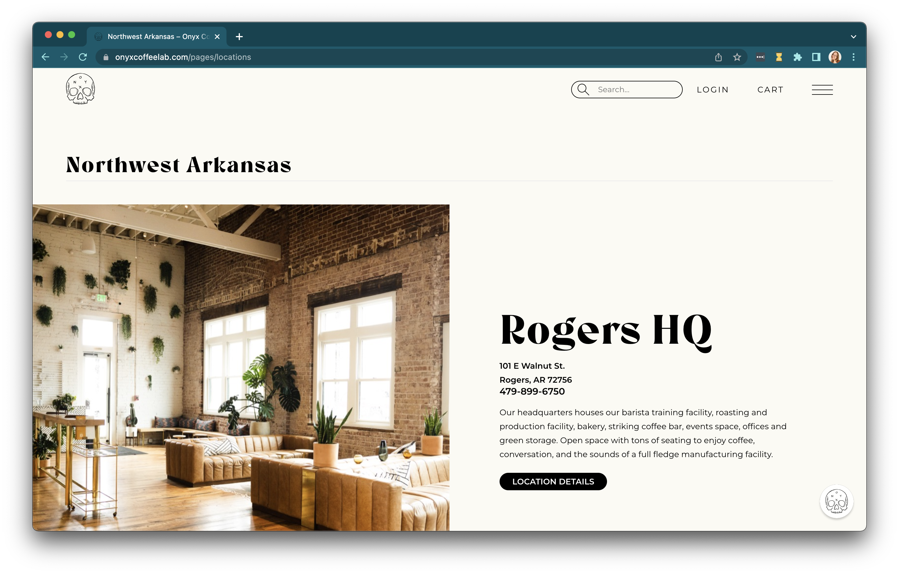

Final project proposal
Introduction
Grounders
Grounders is a sports-based coffee shop emblematic of a sports-bar, but with a more welcoming and generally more chill environment. In addition to the different environment, this type of sports hang out would be accessible all day for a variety of sports, not just for the typical primetime games.
Target audience
Generally speaking, Grounders serves the coffee and sports communities. There is a large portion of sports-watchers that don’t necessarily want to be surrounded by the hustle and bustle of sports bars, or even attending watch parties in someone’s home.
Grounders would still function as a fun, themed-coffee shop that would attract all coffee and coffee shop lovers. This coffee shop would allow all sorts of sports lovers to watch what they wanted to watch in a more comfortable and easy-going environment.
Comparative analysis
Scout Coffee Co.

Onyx Coffee Lab
Blue Bottle Coffee

Website content
Home
Join our pilgrimage—seeking quality, truth and accountability in coffee. We journey to find the finest and most unique coffees in the world.
[People sitting inside coffee shop and some ordering coffee]
About Us
We are a sports themed coffee shop emblematic of a sports bar, but with the more welcoming and chill environment associate with your run-of-the-mill coffee shop.
[Grounders logo]
Menu
[A cup of coffee]
Espresso
$3.25
Gibraltar
$4.00
Cappuccino
$4.00
Mocha
$5.00
Cold Brew
$5.25
Pour Over
$6.00
Chai Latte
$4.50
Locations
`[Bentonville storefront from parking lot]
2501 SE 14th St, Bentonville, AR 72712
12124 California St, Yucaipa, CA 92399
1185 Monterey St, San Luis Obispo, CA 93401